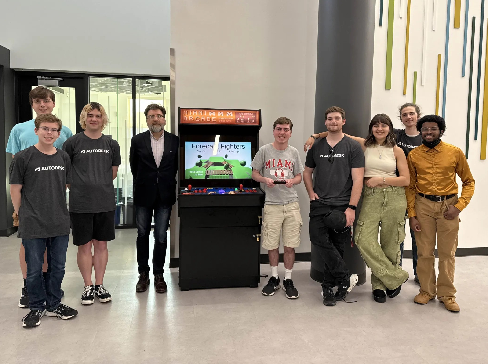

I was the Vice President of Game Design club for 3 years, where I helped create over 25 full games in Unity and Unreal! These games were all of different genres, and were either created in 3-4 hour or 2-3 week long jams. I also coordinated our semester schedules, reserved campus space for weekly meetings, organized leadership discussions to keep things on track, and helped recruit and train incoming leadership to ensure a smooth transition at the end of each year. These experiences taught me how to prototype quickly, manage creative teams, and embrace challenges with limited time and resources.
Justin Klein
Computer Science and Game Development Enthusiast

Hi, I'm Justin! I recently graduated from Miami University with a B.S. in Computer Science and a Minor in Statistical Methods. I enjoy solving complex problems, collaborating with teams, and building both practical and playful applications.
I have collaborated with other students on full-stack applications, Unreal and Unity games, and other programs in multiple languages, including C++, Python, and Java. I love working with people on software development projects, game jams, and teaching students important concepts while having the opportunity to learn a thing or two from them!

 Global Humanitarian Technology Conference at Villanova University.")
I was also the Inventory Manager for HYPE Refurbishment and Donations where I earned the Bronze President's Volunteer Service Award for contributing over 100 volunteer hours towards refurbishing donated PCs for underserved communities. It helped me gain experience refurbishing all kinds of computers, from all-in-ones to laptops and desktops, and was a rewarding way to combine tech skills with meaningful impact. I also took part on a trip to Villanova University near Philadelphia, Pennsylvania, for the Institute of Electrical and Electronics Engineers (IEEE) Global Humanitarian Technology Conference in 2024. At the conference, we presented a paper on our efforts towards finding the most optimal PC type, operating system, and learning model for our refurbishing process.
I'm currently seeking opportunities in frontend, backend, or full-stack development, IT, or game programming with Unreal Engine or Unity. I'm especially drawn to roles that let me combine creativity, technical skill, and teamwork.
Outside of coding, you'll find me gaming, skiing, bowling, or working on DIY projects — I even built my own PC! I value curiosity, community, and learning from every experience — including the students I've taught and the teammates I've worked with.